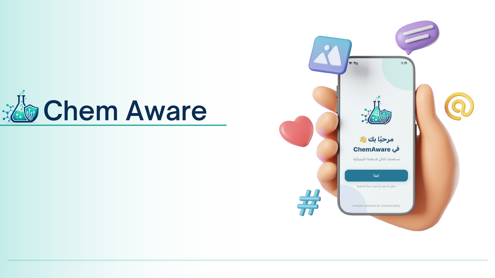
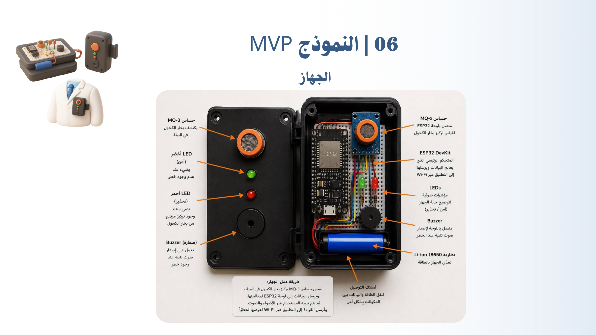
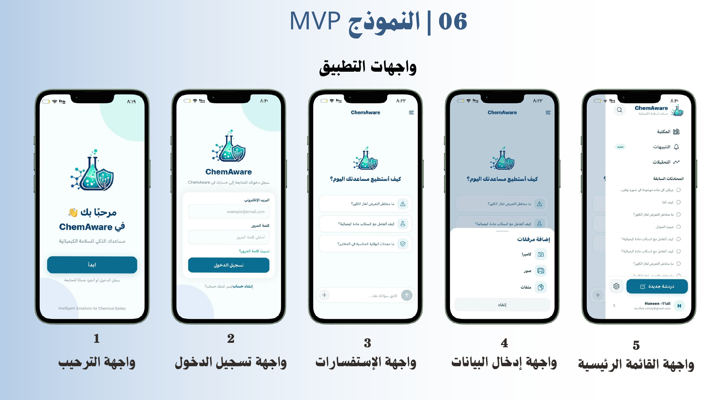
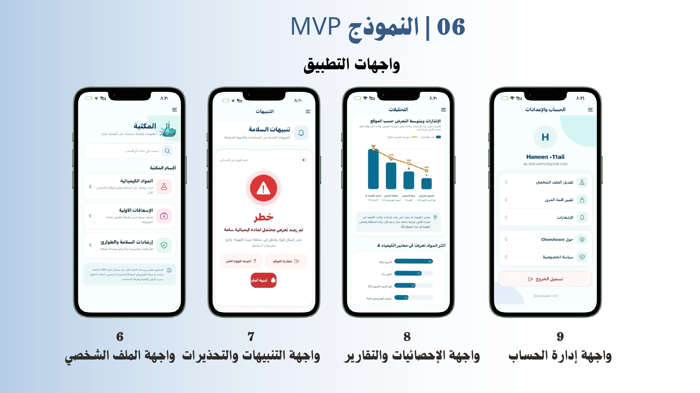

→ العودة إلى المشاريع
ذكاء اصطناعي · ابتكار رقمي · منتج
ChemAware
نظام ذكي للسلامة الكيميائية يجمع بين جهاز مزود بحساسات وتطبيق مرتبط به لرصد الغازات والمواد الكيميائية، وإرسال التنبيهات، وتحليل بيانات التعرض، وتقديم معلومات وإرشادات سلامة مبسطة.

المشكلة
قد يتعامل العاملون في المصانع والمختبرات والبيئات الصناعية مع المواد الكيميائية بصورة متكررة دون وسيلة مبسطة لفهم مخاطر التعرض، مما يزيد احتمالية المخاطر الصحية والمهنية على المدى الطويل.
المستخدمون المستهدفون
- طلاب الكيمياء والباحثون.
- العاملون في المختبرات.
- مسؤولو السلامة والصحة المهنية HSE.
- الجهات والمنشآت التي تتعامل مع المواد الكيميائية.
الحل
يربط ChemAware جهازًا مزودًا بحساسات بتطبيق يقوم برصد الغازات والمواد الكيميائية، وإصدار تنبيهات عند اكتشاف مستويات غير آمنة، وعرض معلومات المواد وتبسيط محتوى نشرات السلامة SDS.
دور الذكاء الاصطناعي
- التعرف على المواد الكيميائية بالاسم أو الصورة.
- تحليل البيانات الواردة من الجهاز.
- تبسيط معلومات السلامة SDS.
- تقديم إرشادات سلامة مناسبة وفق مستوى الخطورة.
النموذج الأولي


